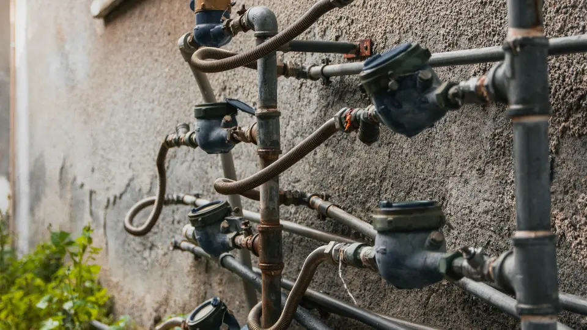

Calibração de Totalizador de Vazão

Totalização é a acumulação da quantidade que atravessa o medidor durante um intervalo. Ela não deve ser confundida com a vazão instantânea: um indicador pode apresentar taxa correta e ainda perder pulsos, aplicar K-factor incorreto ou acumular em unidade diferente.
O que precisa ser comparado
- Volume de referência: quantidade determinada pelo padrão ou método de calibração.
- Volume indicado: total acumulado no instrumento ou sistema.
- Pulsos contados: quantidade recebida no totalizador durante o ensaio.
- K-factor: pulsos por unidade de volume, com unidade explicitamente registrada.
Se o K-factor estiver em pulsos por litro e o sistema totalizar metros cúbicos, a conversão deve ser feita antes da comparação.
Equações básicas
Quando o fator é expresso em pulsos por unidade de volume:
volume pelos pulsos = pulsos / K-factor
erro (%) = (volume indicado − volume de referência) / volume de referência × 100
Uma estimativa de ajuste do fator, quando o procedimento e o fabricante permitem, é:
K novo = K atual × volume indicado / volume de referência
O novo fator não deve ser gravado automaticamente: repetibilidade, unidade, localização do fator e cadeia de pulsos precisam ser confirmadas primeiro.
Exemplo com 50.000 pulsos
Com K-factor de 1.000 pulsos/L, 50.000 pulsos representam 50 L. Se a referência for 49,8 L e o totalizador indicar 50,0 L, o erro de indicação é aproximadamente +0,402%. A estimativa do novo K-factor é 1.004,016 pulsos/L.
Antes de ajustar, repita o ensaio. Uma diferença variável entre ciclos indica problema de repetibilidade, contagem ou condição de processo, não apenas um fator fixo incorreto.
Falhas que imitam erro de K-factor
- Perda de pulsos por largura insuficiente, frequência acima do limite ou entrada mal configurada.
- Tipo elétrico incompatível entre saída e entrada: contato, coletor aberto, tensão ou frequência.
- Totalização iniciada ou encerrada fora da mesma janela do padrão.
- Unidades diferentes entre medidor, CLP, supervisório e relatório.
- Reset, rollover, filtro ou fator adicional aplicado em mais de um ponto.
- Compensação de densidade ou temperatura misturando volume, volume normalizado e massa.
Roteiro de verificação
- Registre leituras iniciais e unidades de todos os totalizadores.
- Confirme origem, tipo elétrico e unidade do pulso.
- Execute quantidade suficiente para reduzir influência da resolução.
- Registre pulsos, volume de referência e volume indicado no mesmo intervalo.
- Repita o ensaio antes de propor correção.
Referência técnica
A Endress+Hauser descreve o K-factor como número de pulsos por unidade de volume no contexto de medidores vortex. A configuração efetiva deve seguir a documentação do medidor e do totalizador utilizados.
Ferramenta e conteúdos relacionados
A ferramenta relacionada calcula volume por pulsos, erro e uma estimativa de fator corrigido a partir dos dados informados.
- Calculadora de Calibração de Medidor de Vazão Coriolis (ferramenta)
- Calculadora de Calibração de Medidor de Vazão Magnético (ferramenta)
- Calculadora de Medidor Ultrassônico (ferramenta)
- Calculadora de Calibração de Transmissor DP de Vazão (ferramenta)
- Calibração de Transmissor DP de Vazão com Raiz Quadrada (artigo)
- K-Factor em Medidores de Vazão por Pulsos (artigo)
Aviso técnico
Este conteúdo é informativo e orientativo. Não substitui método de calibração, padrão rastreável, certificado, manual do fabricante, avaliação das condições de processo, projeto, laudo, ART ou validação por profissional habilitado. Não altere K-factor de medição fiscal, qualidade ou processo crítico sem o procedimento aplicável.